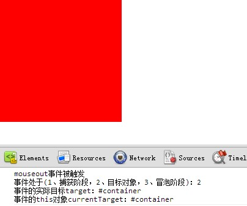
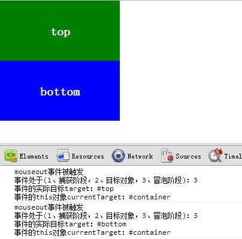
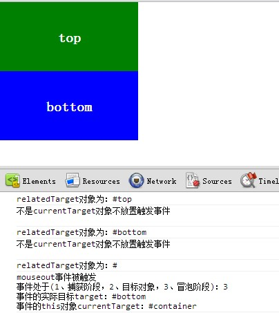

关于js的mouseout
——发表于2012/10/11
1)最近在写菜单栏的时候，用到了js的mouseover事件，发现了一些问题。
当添加事件的容器里面没有其他任何子容器的时候，一切就正常

但是呢，如果父容器里面有子容器，那么鼠标在子容器间切换移动的时候都会触发原本是添加在父容器上的mouseout事件（即使只是在子容器间移动，并没有out出父容器）

2)一开以为是事件冒泡的问题，但后来测试后发现好像不是。
猜测：虽然事件添加在currentTarget上，但是currentTarget只是被注册事件监听器的对象，target才是真正的事件，所以是target触发了事件，所以才有了上面#top 跟#bottom触发了mouseout事件
3）所以，解决的方法就是判断relatedTarget对象是否是currentTarget的子节点或者本身，如果不是，才放置触发要做的事件

4）以下为测试所用代码（解决这个问题的时候，上网查，看的是这篇文章http://www.qiqiboy.com/2011/01/19/javascript-mouseover-and-mouseout.html，不过里面有些些地方不是很赞同，我的测试代码其实就是参考他的代码的 ）
<!DOCTYPE html>
<html>
<head>
<title>aboutMouseout</title>
<meta charset="utf-8" />
<style type="text/css">
body{
margin: 0;
padding: 0;
}
#container{
height: 200px;
width: 200px;
background-color: red;
color:white;
font-size: 20px;
font-weight: bold;
text-align: center;
}
#top{
height: 60px;
width: 200px;
padding-top: 40px;
background-color: green;
}
#bottom{
height: 60px;
width: 200px;
padding-top: 40px;
background-color: blue;
}
</style>
</head>
<body>
<div id="container">
<div id="top">top </div>
<div id="bottom">bottom </div>
</div>
<script type="text/javascript">
var EventUtil = {
addHandler: function (element, type, handler) {
if (element.addEventListener) {
element.addEventListener(type, handler, false);
} else if (element.attachEvent) {
element.attachEvent("on" + type, handler);
} else {
element["on" + type] = handler;
}
},
getEvent: function (event) {
return event ? event : window.event;
},
getTarget: function (event) {
return event.target || event.srcElement;
},
getRelatedTarget: function (event) {
if (event.relatedTarget) {
return event.relatedTarget;
} else if (event.toElement) {
return event.toElement;
} else if (event.formElement) {
return event.formElement;
} else {
return null;
}
}
}
//返回值布尔值，判断childNode是否是parentNode的子节点
function contains(parentNode,childNode){
if(typeof parentNode.contains==="function"){
return parentNode.contains(childNode);
}else if(typeof parentNode.compareDocumentPosition==="function"){
return !!(parentNode.compareDocumentPosition(childNode)&16);
}else{
var node=childNode.parentNode;
do{
if(node===parentNode){
return true;
}else{
node=node.parentNode;
}
}while(node!==null);
return false;
}
}
//返回值布尔值，判断是否触发事件
function fixedMouse(event,element){
event=EventUtil.getEvent(event);
var related,
type=event.type.toLowerCase();
if(type==="mouseover"||type==="mouseout"){
related=EventUtil.getRelatedTarget(event);
}else return true;
console.log("relatedTarget对象为：#"+related.id);
return related && related.prefix!='xul' &&
!contains(element,related) && related!==element;
}
EventUtil.addHandler(document.getElementById("container"),"mouseout",function(event){
event=EventUtil.getEvent(event);
var target=EventUtil.getTarget(event),
currentTarget=event.currentTarget;
if(fixedMouse(event,this)){
//放置触发事件
console.log(event.type+"事件被触发\n"+"事件处于(1、捕获阶段，2、目标对象，3、冒泡阶段)："+
event.eventPhase+"\n事件的实际目标target：#"+target.id+
"\n事件的this对象currentTarget：#"+currentTarget.id);
}else{
//不放置触发事件
console.log("不是currentTarget对象不放置触发事件\n");
}
});
</script>
</body>
</html>